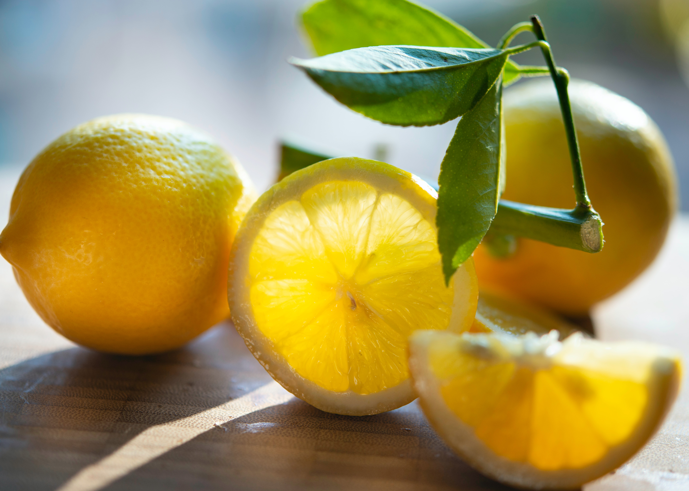

TURN YOUR PEANUT BUTTER UPSIDE DOWN
This is so simple, but once you make this easy switch, you'll never look
back. Turn your jar of peanut butter upside down. That's it. Natural
peanut butter – and other nut butters – don't have any added
stabilisers, so the oils will usually separate and move to the top of
the jar. Save yourself the time and faff (and mess) of trying to stir it
together, and just store it upside down. The oils will head to the
bottom of the jar, making it much easier to use when the time comes.
Happy nut butter spreading and spooning.
USE OVERRIPE BANANAS FOR THE BEST BANANA BREAD

If you do end up with black or brown bananas, fear not. Overripe bananas
are best for use in baking as they're sweeter and easier to mash into
batter. Banana bread is a favourite for using the fruit – this version
also incorporates cocoa nibs and a shot of coffee.
USE A HAND MIXER FOR MASHED POTATOES
For those who would prefer to skip the arm workout that comes with
mashing potatoes, using an electric hand mixer is an easy solution. As
well as taking away all the effort, a hand mixer ensures lump-free mash
every time.
MICROWAVE PIZZA WITH WATER

Revive leftover, dried-out pizza by microwaving it with a mug of water.
As the water evaporates, moisture fills the microwave, rehydrating the
dry crust and giving you a gooey, cheesy pizza slice once more.
GRATE BUTTER FOR EASY SPREADING

If you’re having a hard time with cold butter, use a grater to soften
the perfect amount to put on toast or bread. It'll make the butter
easier to spread, without destroying your loaf in the process. This
method is even used by chefs to make perfect buttery pastry.
USE VEGETABLE WATER IN GRAVY

You might already use the juices from roasted meat in your gravy, but
don't forget about veggies. Add the nutrient-rich water from boiled veg
and any run-off from a roasting tin as well. It'll make for a flavourful
gravy packed with vitamins.
MASSAGE KALE
If you're planning on eating raw kale in a salad, massage the greens
beforehand. It may sound odd but it'll tenderise the hardy leaves.
First, remove the stem and add a glug of olive oil, a squeeze of lemon
and a pinch of salt to the leaves. Then gently knead the kale with your
hands until the leaves start to wilt a little. Be careful not to
overwork the greens though as they'll become mushy.
REVIVE OLD BREAD WITH WATER

Sprinkle a few tablespoons of water over bread that's a few days old,
then stick it in a hot oven for a few minutes. It'll bring your stale
loaf back to life. This trick works best on whole, unsliced loaves like
baguettes, sourdough or ciabatta.
STORE HEARBS LIKE FLOWERS
Want to know the secret for making cut herbs last? Keep them upright in
about 5cm (2 inches) of water as you would a bunch of flowers. Shelter
them from direct sunlight and change the water regularly. They'll stay
fresher for longer.
KEEP COFFEE COOL AND CAFFEINATED

This tip is essential for iced coffee lovers who don't want their
caffeine hit watered down. Brew fresh coffee (as strong as you like it)
and pour it into an ice cube tray. Add the frozen coffee cubes to cold
brew or iced coffee, or blend them with milk to make an iced latte.
MICROWAVE LEMONS TO GET MORE JUICE

Get more juice from a lemon by microwaving it on high for around 20
seconds. It'll be warmer and softer than straight from the fridge,
making the citrus fruit easier to squeeze. It's a must-try hack if
you're making lemonade too.